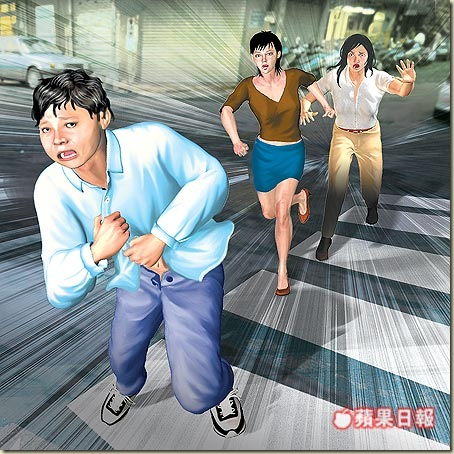

Speed Racer Star Hospitalized After Attack

Fuzzles Of Speed Racer Fame and Clyde, Clint Eastwood's one time companion and star of Every Which Way But Loose, were involved in a brawl on Wednesday.
The altercation took place at an HSUS fundraiser the two simian stars were attending.
Sources have yet to confirm what started the fight.
 One attendee, Deanna Russo, stated that," I think it all
One attendee, Deanna Russo, stated that," I think it all
started when Clyde made a remark to Fuzzles about being a sell out and wearing clothes. I really think he was just jealous that he hasn't had any real work in like 25 years."
Apparently sources report that Fuzzles fired back calling him "a washed up has-been", this is when the scuffle began.
"Oh it was so brutal. That poor little guy, he was so scared he actually pulled a gun off of one of his security guards, but that giant orangutan was on him before he could do anything," said Gina Carano of Oakland, California.
It took 4 tasers and 12 of Fuzzles security guards to separate the two, but not before Clyde gave Fuzzles a severe bite to his left cheek.
Fuzzles was rushed to the hospital, where he has been listed in stable condition.
One terrified witness to the attack, Nick Young, stated that, "...yeah that other orange monkey, I guess he was a crazed fan just started pounding on Fuzzles. It was horrible. Cliff or Clyde whatever his name was he was acting like an animal, just totally out of control, you know? He was frothing at the mouth and stuff."
Clyde was euthanized following the incident and his head was removed to test for rabies.
{kind=link}
Fuzzles doctors aren't taking any chances and neither are his agents, they started the multimillion dollar star on a rabies treatment immediately.
Fans have been gathering outside the hospital with flowers since he was rushed there yesterday afternoon.
{kind=link}
No determination has been made yet as to whether Clyde was suffering from rabies or just jealous rage.
Related posts

Rapist Viciously Beaten By Victim's Children During Attack
24 Year old horny young man went up to the roof of his building one night trying to peak at…

Speed Racer Actor Soars to Fame; Defends Ninjas
Guys across the country are praising the new DVD/ Blu Ray release Speed Racer for it's colorful display action packed…

Ex-Wife Attacks Man, Tears Testicular Artery
A man filed for restraining order against his ex-wife that he divorced 16 years ago. After their divorce, they both…

Angry Women Chase Half-Nude Attacker Down City Streets
Two girls were sitting outside chatting. This guy walked funny passing them and they didn't think too much of it. …
Comments